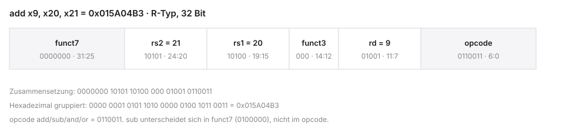

%%{init: {'theme': 'base', 'themeVariables': {'background': '#FFFFFF', 'primaryColor': '#FFFFFF', 'primaryBorderColor': '#E5E5EA', 'primaryTextColor': '#1D1D1F', 'lineColor': '#86868B', 'secondaryColor': '#F5F5F7', 'tertiaryColor': '#FFFFFF', 'mainBkg': '#FFFFFF', 'nodeBorder': '#E5E5EA', 'clusterBkg': '#F5F5F7', 'clusterBorder': '#E5E5EA', 'titleColor': '#1D1D1F', 'edgeLabelBackground': '#FFFFFF'}}}%%
graph LR
A[Philosophie] --> B[Architektur]
B --> C[Assembler]
C --> D[Maschinencode]
D --> E[Venus]
style A fill:#FFFFFF,stroke:#E2001A,stroke-width:2px !important
style B fill:#FFFFFF,stroke:#E5E5EA,stroke-width:1.5px
style C fill:#FFFFFF,stroke:#E5E5EA,stroke-width:1.5px
style D fill:#FFFFFF,stroke:#E5E5EA,stroke-width:1.5px
style E fill:#FFFFFF,stroke:#E5E5EA,stroke-width:1.5px
Mikrocomputertechnik 1
Einheit 2: RISC-V Basics
Prof. Dr.-Ing. Daniel Klünder
RISC-V Basics
Agenda für Block 2
- Architektur-Philosophie — CISC vs. RISC
- Die RV32I Basis-Architektur — Register File & Spezifikation
- R-Type-Befehle — Rechnen mit Registern
- Maschinencode — Assembler → 32-Bit Hex
- I-Type-Befehle — Konstanten (Immediates)
- Praxis (Venus) — Simulator und erste Programme
Rückblick: Was wir bisher gebaut haben
- 32-Bit-ALU: Add, Sub, Logik
- Register File: 32 schnelle Speicherplätze
- Multiplexer für steuerbare Datenpfade
- Anbindung an den Arbeitsspeicher (RAM)
- Globales Taktsignal (Clock) synchronisiert alles
Das Problem der Steuerung
- Hardwarekomponenten brauchen Steuersignale
- ALU: z. B. 2-Bit-Code für die Operation
- Register-File-Decoder: 5-Bit-Adresse für das Fach
- Frage: Wie teilen wir der Hardware mit, welche Leitungen wann aktiv sind?
- Antwort: Instruktionen im Speicher; im Kursmodell liegen sie im RAM
%%{init: {'theme': 'base', 'themeVariables': {'background': '#FFFFFF', 'primaryColor': '#FFFFFF', 'primaryBorderColor': '#E5E5EA', 'primaryTextColor': '#1D1D1F', 'lineColor': '#86868B', 'secondaryColor': '#F5F5F7', 'tertiaryColor': '#FFFFFF', 'mainBkg': '#FFFFFF', 'nodeBorder': '#E5E5EA', 'clusterBkg': '#F5F5F7', 'clusterBorder': '#E5E5EA', 'titleColor': '#1D1D1F', 'edgeLabelBackground': '#FFFFFF'}}}%%
graph LR
Prog[Programmierer] -->|schreibt Befehl| RAM[(Speicher)]
RAM -->|Bits| CU[Control Unit]
CU -.->|Steuersignale| ALU[ALU & MUX]
style CU fill:#FFFFFF,stroke:#E2001A,stroke-width:2px !important
style Prog fill:#FFFFFF,stroke:#E5E5EA,stroke-width:1.5px
style RAM fill:#FFFFFF,stroke:#E5E5EA,stroke-width:1.5px
style ALU fill:#FFFFFF,stroke:#E5E5EA,stroke-width:1.5px
1. Die Architektur-Philosophie
Von Software zu Transistoren
- Weg von abstrakter Software zu schaltenden Transistoren
- Hardware und Software brauchen einen festen Vertrag
- Historischer Einfluss teurer Hardware auf Prozessor-Design
- CISC, etwa x86: variable Länge und Befehle mit Speicheroperanden
- RISC, etwa Arm und RISC-V: wenige Formate und Load/Store
%%{init: {'theme': 'base', 'themeVariables': {'background': '#FFFFFF', 'primaryColor': '#FFFFFF', 'primaryBorderColor': '#E5E5EA', 'primaryTextColor': '#1D1D1F', 'lineColor': '#86868B', 'secondaryColor': '#F5F5F7', 'tertiaryColor': '#FFFFFF', 'mainBkg': '#FFFFFF', 'nodeBorder': '#E5E5EA', 'clusterBkg': '#F5F5F7', 'clusterBorder': '#E5E5EA', 'titleColor': '#1D1D1F', 'edgeLabelBackground': '#FFFFFF'}}}%%
graph LR
CISC["variable Laenge"] --- VS((ISA))
VS --- RISC["Load/Store"]
style RISC fill:#FFFFFF,stroke:#E2001A,stroke-width:2px !important
style CISC fill:#FFFFFF,stroke:#E5E5EA,stroke-width:1.5px
style VS fill:#FFFFFF,stroke:#E5E5EA,stroke-width:1.5px
Was ist eine ISA?
- ISA = Instruction Set Architecture (Befehlssatzarchitektur)
- Scharnier zwischen Software und Hardware
- Definiert, welche Befehle die CPU versteht
- Definiert nicht, wie sie elektronisch umgesetzt werden
- Das „Wie“ ist die Mikroarchitektur
- Verbindlicher Vertrag: Compiler-Autor → Chip-Designer
Der historische Kontext (1970er)
- In vielen Systemen der 1970er war Arbeitsspeicher teuer und klein
- Codegröße meint codierte Bytes, nicht nur die Instruktionsanzahl
- Ein komplexerer Befehl kann mehrere Schritte bündeln
- Das ist ein Entwurfsdruck, nicht die Beschreibung jeder Maschine
CISC (Complex Instruction Set Computer)
- Vertreter: Intel x86, AMD64 (viele PCs)
- Philosophie: Programmierer/Compiler entlasten
- Viele spezialisierte Instruktionen mit umfangreicher Semantik
- Ein Befehl kann lesen, rechnen und in den RAM schreiben
- Variable Befehlslänge (z. B. 1 bis 15 Bytes)
Die Nachteile von CISC
- Variable Länge und komplexe Semantik können den Decoderaufwand erhöhen
- Latenzen hängen von der Implementierung ab, nicht fest von der ISA
- Eine Pipeline bleibt eine Mikroarchitekturfrage
- Rückwärtskompatibilität bindet spätere Chips an ältere Befehle
%%{init: {'theme': 'base', 'themeVariables': {'background': '#FFFFFF', 'primaryColor': '#FFFFFF', 'primaryBorderColor': '#E5E5EA', 'primaryTextColor': '#1D1D1F', 'lineColor': '#86868B', 'secondaryColor': '#F5F5F7', 'tertiaryColor': '#FFFFFF', 'mainBkg': '#FFFFFF', 'nodeBorder': '#E5E5EA', 'clusterBkg': '#F5F5F7', 'clusterBorder': '#E5E5EA', 'titleColor': '#1D1D1F', 'edgeLabelBackground': '#FFFFFF'}}}%%
graph LR
Befehl[CISC-Befehl] --> Decoder[Decoder]
Decoder --> M1[µOp 1]
Decoder --> M2[µOp 2]
Decoder --> MN[µOp N]
style Decoder fill:#FFFFFF,stroke:#E2001A,stroke-width:2px !important
style Befehl fill:#FFFFFF,stroke:#E5E5EA,stroke-width:1.5px
style M1 fill:#FFFFFF,stroke:#E5E5EA,stroke-width:1.5px
style M2 fill:#FFFFFF,stroke:#E5E5EA,stroke-width:1.5px
style MN fill:#FFFFFF,stroke:#E5E5EA,stroke-width:1.5px
RISC (Reduced Instruction Set Computer)
- Vertreter: ARM, MIPS, RISC-V
- Entwurfsidee dieses Befehlssatzes: feste Länge, Load/Store, wenige Befehlsformate
- Ein einzelner RISC-Befehl ist kein Synchronisationsvertrag einer atomaren Speicheroperation
- Pipelining ist eine Mikroarchitekturfrage; CISC-Implementierungen zerlegen oft in einfachere µOps
- Kompromiss: der Compiler erzeugt oft mehr Befehle
Die eiserne RISC-Regel: Load/Store
- Registerarithmetik verarbeitet Registeroperanden, nicht RAM-Inhalte
- Die ALU darf trotzdem eine effektive Adresse berechnen
- RAM-Zugriff nur über zwei Befehlstypen:
- Load: RAM → Register
- Store: Register → RAM
%%{init: {'theme': 'base', 'themeVariables': {'background': '#FFFFFF', 'primaryColor': '#FFFFFF', 'primaryBorderColor': '#E5E5EA', 'primaryTextColor': '#1D1D1F', 'lineColor': '#86868B', 'secondaryColor': '#F5F5F7', 'tertiaryColor': '#FFFFFF', 'mainBkg': '#FFFFFF', 'nodeBorder': '#E5E5EA', 'clusterBkg': '#F5F5F7', 'clusterBorder': '#E5E5EA', 'titleColor': '#1D1D1F', 'edgeLabelBackground': '#FFFFFF'}}}%%
graph LR
RAM[(Arbeitsspeicher)] -->|Load| RF[Register File]
RF -->|Store| RAM
RF <-->|Operanden| ALU[ALU]
style ALU fill:#FFFFFF,stroke:#E2001A,stroke-width:2px !important
style RF fill:#FFFFFF,stroke:#E5E5EA,stroke-width:1.5px
style RAM fill:#FFFFFF,stroke:#E5E5EA,stroke-width:1.5px
Die Waage der Komplexität
- Architektur-Design: Aufwand verteilt sich auf Compiler, Decoder und Ausführung, ohne festes Nullsummengesetz
- Codeumfang, Compileraufwand und Decoderdesign sind verschiedene Größen
- CISC verlagert oft Semantik in einzelne Befehle
- RISC verlagert oft die Zerlegung in den Compiler
- Energie folgt aus Workload, Fertigung und Mikroarchitektur, nicht aus dem Etikett
Warum RISC-V?
- Offene, gebührenfreie ISA; die Coreimplementierung kann kommerziell sein
- Dokumentierte Formate und eine überschaubare Integerbasis
- Erweiterungen bleiben vom Kurskern RV32I getrennt
- Embedded Systems und IoT sind Anwendungsfelder, kein Energieversprechen
RISC-V in der Industrie
- Ankündigung, ausgelieferter Kern und konkretes Produkt sind zu trennen
- Steuerkerne in Controllern sind ein belegbares Einsatzmuster
- KI-Beschleuniger und GPUs können einen RISC-V-Kern als Steuerung nutzen
- Daraus folgt keine Stückzahl und keine Marktprognose
2. Die RV32I Basis-Architektur
Überblick RV32I
- Modularer RISC-V-Baukasten
- Fokus: Integer-Basis-Erweiterung RV32I
- Register File als zentrales Arbeitswerkzeug
- 32 Architektur-Register: Hardware- und ABI-Namen
- Application Binary Interface (ABI) als Software-Konvention
%%{init: {'theme': 'base', 'themeVariables': {'background': '#FFFFFF', 'primaryColor': '#FFFFFF', 'primaryBorderColor': '#E5E5EA', 'primaryTextColor': '#1D1D1F', 'lineColor': '#86868B', 'secondaryColor': '#F5F5F7', 'tertiaryColor': '#FFFFFF', 'mainBkg': '#FFFFFF', 'nodeBorder': '#E5E5EA', 'clusterBkg': '#F5F5F7', 'clusterBorder': '#E5E5EA', 'titleColor': '#1D1D1F', 'edgeLabelBackground': '#FFFFFF'}}}%%
graph LR
A[Modular] --> B[RV32I]
B --> C[32 Register]
C --> D[ABI]
style B fill:#FFFFFF,stroke:#E2001A,stroke-width:2px !important
style A fill:#FFFFFF,stroke:#E5E5EA,stroke-width:1.5px
style C fill:#FFFFFF,stroke:#E5E5EA,stroke-width:1.5px
style D fill:#FFFFFF,stroke:#E5E5EA,stroke-width:1.5px
Der RISC-V Modulbaukasten
- Nicht ein starrer Satz, sondern modular
- Unsere gewählte Basis: RV32I
- Weitere Basen existieren;
Iist nicht die einzige zulässige Basis - Optionale Extensions, u. a.:
M— Multiply/DivideF/D— Float / DoubleC— Compressed (16-Bit-Befehle); in den Kernbeispielen aus
G=IMAFDsowieZicsrundZifencei
| String | Bedeutung |
|---|---|
| RV32I | 32-Bit-Basis dieses Kurses, ohne C |
| RV64G | RV64 mit I, M, A, F, D, Zicsr, Zifencei |
| RV64GC | RV64G plus Compressed |
Die Definition von RV32I
- RV: Architektur-Familie RISC-V
- 32: Datenpfad- und Adressbreite 32 Bit
- I: Integer-Basis; Gleitkommabefehle gehören zu F und D
- mul und div gehören zur Erweiterung M, nicht zu RV32I
- Im Kurs sind die nativen Instruktionen unkomprimiert 32 Bit lang
Die 32 Architektur-Register
- Register File der ISA: 32 Architekturregister (\(x0\)–\(x31\))
- Nicht dasselbe wie physische Register einer Mikroarchitektur
- Adressierung im Befehlswort: \(5\) Bits (\(2^5 = 32\))
x0ist fest 0; die übrigen 31 sind beschreibbar- Die ISA schreibt keine bestimmte Flip-Flop-Bank vor
%%{init: {'theme': 'base', 'themeVariables': {'background': '#FFFFFF', 'primaryColor': '#FFFFFF', 'primaryBorderColor': '#E5E5EA', 'primaryTextColor': '#1D1D1F', 'lineColor': '#86868B', 'secondaryColor': '#F5F5F7', 'tertiaryColor': '#FFFFFF', 'mainBkg': '#FFFFFF', 'nodeBorder': '#E5E5EA', 'clusterBkg': '#F5F5F7', 'clusterBorder': '#E5E5EA', 'titleColor': '#1D1D1F', 'edgeLabelBackground': '#FFFFFF'}}}%%
graph LR
x0[x0] --- x1[x1] --- dots[...] --- x31[x31]
style x0 fill:#FFFFFF,stroke:#E2001A,stroke-width:2px !important
style x1 fill:#FFFFFF,stroke:#E5E5EA,stroke-width:1.5px
style dots fill:#FFFFFF,stroke:#E5E5EA,stroke-width:1.5px
style x31 fill:#FFFFFF,stroke:#E5E5EA,stroke-width:1.5px
Das Spezialregister \(x0\) (zero)
- \(x0\) physisch oft fest auf 0 verdrahtet (Hardwired Zero)
- Lesen: immer \(0\)
- Schreiben: wird ignoriert (verpufft)
- Nutzen: Operationen aus Standardbefehlen „basteln“ (Kopieren, Negieren, …)
Der Program Counter (PC)
- Zusätzlich zu \(x0\)–\(x31\): isoliertes PC-Register
- Speichert die Adresse der aktuell auszuführenden / als Nächstes geholten Instruktion
- 32 Bit breit
- Folgeinstruktion: \(PC+4\) (bei RV32I ein Word); Venus zeigt den PC der aktuellen Instruktion
%%{init: {'theme': 'base', 'themeVariables': {'background': '#FFFFFF', 'primaryColor': '#FFFFFF', 'primaryBorderColor': '#E5E5EA', 'primaryTextColor': '#1D1D1F', 'lineColor': '#86868B', 'secondaryColor': '#F5F5F7', 'tertiaryColor': '#FFFFFF', 'mainBkg': '#FFFFFF', 'nodeBorder': '#E5E5EA', 'clusterBkg': '#F5F5F7', 'clusterBorder': '#E5E5EA', 'titleColor': '#1D1D1F', 'edgeLabelBackground': '#FFFFFF'}}}%%
graph LR
PC["PC: 0x00400000"] -->|Fetch| IM[Instruction Memory]
IM -->|Befehl| CU[Control & ALU]
style PC fill:#FFFFFF,stroke:#E2001A,stroke-width:2px !important
style IM fill:#FFFFFF,stroke:#E5E5EA,stroke-width:1.5px
style CU fill:#FFFFFF,stroke:#E5E5EA,stroke-width:1.5px
Was ist eine ABI?
- \(x0\)–\(x31\): physikalische Hardware-Namen
- Software nutzt ABI-Namen (Application Binary Interface)
- Konvention: wofür welche Register dienen
- Hardware erzwingt das nicht — ohne ABI bricht C-Interoperabilität
- Beispiel: \(x10\) =
a0(Argument / Rückgabewert)
| Hardware | ABI | Nutzung | Preserved? |
|---|---|---|---|
| \(x5\)–\(x7\) | t0–t2 |
temporär | nein |
| \(x8\)–\(x9\) | s0–s1 |
gespeichert | ja |
ABI: Temporäre Register (t)
- Namen:
t0–t6(\(x5\)–\(x7\), \(x28\)–\(x31\)) - Zweck: flüchtige Zwischenrechnungen
- Not Preserved (Caller-Saved)
- Nach Funktionsaufruf: Inhalt darf überschrieben sein
ABI: Gespeicherte Register (s)
- Namen:
s0–s11(\(x8\)–\(x9\), \(x18\)–\(x27\)) - Zweck: längerlebige Variablen
- Preserved (Callee-Saved)
- Nutzt die Callee
s0, muss sie vorher auf dem Stack sichern und später wiederherstellen
ABI: Argument-Register (a)
- Namen:
a0–a7(\(x10\)–\(x17\)) - Zweck: Parameterübergabe an Funktionen
- Rückgabewert unserer einfachen Integer-Funktionen:
a0 - Ebenfalls flüchtig (Not Preserved)
- Simulator-
ecallist ein anderer Vertrag: in Venus Dienstkennung ina0, erster Parameter ina1
Warum sich an die ABI halten?
- Venus erzwingt die ABI nicht
- Normale Funktion und
ecallnicht vermischen - Venus-Druck einer Ganzzahl:
a0 = 1, Wert ina1; Exit:a0 = 10 - Funktionsergebnis skalarer 32-Bit-Werte:
a0 - Im Kurs: ABI-Namen für Funktionen
| Vertrag | Kennung | Argument | Rückgabe |
|---|---|---|---|
| ILP32-Funktion | — | a0, a1, … |
a0 |
Venus-ecall |
a0 |
erster Wert in a1 |
abhängig vom Dienst |
Ripes-ecall |
Tabelle der installierten Version | nicht mit Venus gleichsetzen | siehe ecalls.md |
%%{init: {'theme': 'base', 'themeVariables': {'background': '#FFFFFF', 'primaryColor': '#FFFFFF', 'primaryBorderColor': '#E5E5EA', 'primaryTextColor': '#1D1D1F', 'lineColor': '#86868B', 'secondaryColor': '#F5F5F7', 'tertiaryColor': '#FFFFFF', 'mainBkg': '#FFFFFF', 'nodeBorder': '#E5E5EA', 'clusterBkg': '#F5F5F7', 'clusterBorder': '#E5E5EA', 'titleColor': '#1D1D1F', 'edgeLabelBackground': '#FFFFFF'}}}%%
graph LR
Code[Ihr Assembler] -->|Parameter in a0| OS[OS / C-Lib]
OS -->|Ergebnis in a0| Code
style OS fill:#FFFFFF,stroke:#E2001A,stroke-width:2px !important
style Code fill:#FFFFFF,stroke:#E5E5EA,stroke-width:1.5px
3. R-Type Befehle (Register)
Einstieg: R-Type
- Einstieg in die Assembler-Programmierung
- Syntax: Ziel, Quelle1, Quelle2
- Arithmetik: Addition und Subtraktion
- Bitweise Logik: AND, OR, XOR
- Shifts: mathematische Bedeutung der Verschiebungen
%%{init: {'theme': 'base', 'themeVariables': {'background': '#FFFFFF', 'primaryColor': '#FFFFFF', 'primaryBorderColor': '#E5E5EA', 'primaryTextColor': '#1D1D1F', 'lineColor': '#86868B', 'secondaryColor': '#F5F5F7', 'tertiaryColor': '#FFFFFF', 'mainBkg': '#FFFFFF', 'nodeBorder': '#E5E5EA', 'clusterBkg': '#F5F5F7', 'clusterBorder': '#E5E5EA', 'titleColor': '#1D1D1F', 'edgeLabelBackground': '#FFFFFF'}}}%%
graph LR
R1[rs1] --> ALU[ALU]
R2[rs2] --> ALU
ALU --> Dest[rd]
style ALU fill:#FFFFFF,stroke:#E2001A,stroke-width:2px !important
style R1 fill:#FFFFFF,stroke:#E5E5EA,stroke-width:1.5px
style R2 fill:#FFFFFF,stroke:#E5E5EA,stroke-width:1.5px
style Dest fill:#FFFFFF,stroke:#E5E5EA,stroke-width:1.5px
Was ist Assembler?
- C, Java oder Python sind Hochsprachen (hardware-unabhängig)
- Prozessoren verarbeiten ausschließlich Maschinencode (
0und1) - Assembler: für Menschen lesbare Text-Repräsentation dieses Codes
- Fast 1:1-Mapping: eine Textzeile entspricht einem 32-Bit-Maschinenbefehl
- Mnemonics wie
addodersubersetzen unlesbare Binärcodes
Die Grund-Syntax der R-Types
- Grammatik ist strikt — hält den Decoder einfach
- Operationsname (Mnemonic) zuerst
- Operanden strikt durch Kommas getrennt
- Goldene Regel: Zielregister
rdsteht fast immer links - Danach Quellen:
rs1, dannrs2
Addition (add)
- Fundamentalster Rechenbefehl der ALU
- \(rd = rs1 + rs2\) (32-Bit-Integer, Zweierkomplement)
- Überlauf (Overflow): Hardware schneidet stumm ab — kein Trap
- Überlauf: die unteren 32 Bit bleiben; kein automatischer Trap
Mapping auf die C-Welt
- Keine Variablennamen wie
temperatur— nur Register - Compiler mappt C-Variablen auf ABI-Register (
s0,s1, …) - Keine Typen in der reinen Hardware-Ausführung
- Eine C-Zuweisung wird oft zu einem R-Type
- Ob ASCII oder Zahl: der Programmierer muss es wissen
Subtraktion (sub)
- \(rd = rs1 - rs2\) (Reihenfolge nicht kommutativ!)
- Intern: Zweierkomplement-Trick aus Block 1 (invertieren \(+1\))
- Kein eigener Befehl für „plus negative Konstante“ — später I-Type
Komplexe Gleichungen
- Maximal zwei Quellregister im R-Format dieses Befehlssatzes
- C-Zeile
a = b + c - dpasst nicht in ein R-Format - Die ALU dieses Lehrmodells hat zwei Dateneingänge
- Drei Quellregister wären ein anderes Befehlsformat, kein physikalisches Verbot von 32 Bit
- Der Compiler zerlegt den Ausdruck in mehrere Instruktionen
Lösung: Mehrzeiler
- Zerlegung in Zwischenschritte
- Temporäre Register (
t0–t6) als Schmierzettel - Schritt 1: \(b + c\) → temporär
- Schritt 2: temporär \(- d\) → Ziel
- Software-Code länger, Hardware bleibt schnell
Logische Operationen (and, or, xor)
- Bitweise Boolesche Algebra — alle 32 Bits parallel
and: Bits ausmaskieren (\(Y = A \land B\))or: Bits setzen (\(Y = A \lor B\))xor: Bits toggeln / Ungleichheit (\(Y = A \oplus B\))
Bit-Shifting (Verschiebungen)
- Bits um \(N\) Positionen nach links oder rechts
- Eine Seite: Bits fallen „über die Klippe“
- Andere Seite: Lücken müssen aufgefüllt werden
- In Hardware nicht pauschal schneller als eine Multiplikation; das hängt von der Implementierung ab
%%{init: {'theme': 'base', 'themeVariables': {'background': '#FFFFFF', 'primaryColor': '#FFFFFF', 'primaryBorderColor': '#E5E5EA', 'primaryTextColor': '#1D1D1F', 'lineColor': '#86868B', 'secondaryColor': '#F5F5F7', 'tertiaryColor': '#FFFFFF', 'mainBkg': '#FFFFFF', 'nodeBorder': '#E5E5EA', 'clusterBkg': '#F5F5F7', 'clusterBorder': '#E5E5EA', 'titleColor': '#1D1D1F', 'edgeLabelBackground': '#FFFFFF'}}}%%
graph LR
A["1 0 1 1 0"] -->|"Shift Left 1"| B["0 1 1 0 0"]
style B fill:#FFFFFF,stroke:#E2001A,stroke-width:2px !important
style A fill:#FFFFFF,stroke:#E5E5EA,stroke-width:1.5px
Logical Shift Left (sll)
- Bits nach links; LSB-Lücke mit \(0\) gefüllt
- Entspricht einer Multiplikation mit \(2^{k}\) nur, wenn keine relevanten Bits herausfallen
- Registershift: nur die unteren fünf Bits des Shift-Registers zählen
- Ein C-Shift um 32 ist ein anderer, undefinierter Fall
Logical Shift Right (srl)
- Bits nach rechts; MSB-Lücke mit \(0\) gefüllt
- Entspricht der Division des vorzeichenlos gelesenen Bitmusters durch \(2^{k}\)
- Bei negativem Zweierkomplement zerstört die Nullfüllung das Vorzeichen
Arithmetic Shift Right (sra)
- Lücke links: Sign-Extension (altes MSB nachfüllen)
- Rundet bei negativen Werten nach \(-\infty\), nicht wie C gegen 0
- Beispiel:
sraivon \(-3\) um 1 ergibt \(-2\); in C gilt \(-3/2 = -1\)

Der \(x0\)-Trick: Variablen kopieren
- Kein nativer
MOV— spart Chipfläche - Kopie: \(t2 = t1 + 0\) über Hardwired Zero
- Compiler „erfindet“ Move aus vorhandener Hardware
Der \(x0\)-Trick: Vorzeichen invertieren
- Kein natives
NEG - \(0 - X = -X\) über
subundx0
R-Type Übersicht
Alle R-Types: nur Register, treiben primär die ALU; Syntax befehl rd, rs1, rs2.
| Mnemonic | Name | Operation |
|---|---|---|
add |
Add | \(rd = rs1 + rs2\) |
sub |
Subtract | \(rd = rs1 - rs2\) |
and |
AND | \(rd = rs1 \land rs2\) |
or |
OR | \(rd = rs1 \lor rs2\) |
xor |
XOR | \(rd = rs1 \oplus rs2\) |
sll |
Shift Left Logical | \(rd = rs1 \ll rs2\) |
srl |
Shift Right Logical | \(rd = rs1 \gg rs2\) (0-Fill) |
sra |
Shift Right Arithmetic | \(rd = rs1 \gg rs2\) (Sign-Fill) |
4. Maschinencode & Decodierung
Von Text zu Bits
- Text ist nur für Menschen
- Notwendigkeit: 32-Bit-Codierung
- Instruction Format: wo liegt welches Bit?
- Aufbau des 6-Felder-R-Type-Formats
- Wir spielen Assembler — manuell
%%{init: {'theme': 'base', 'themeVariables': {'background': '#FFFFFF', 'primaryColor': '#FFFFFF', 'primaryBorderColor': '#E5E5EA', 'primaryTextColor': '#1D1D1F', 'lineColor': '#86868B', 'secondaryColor': '#F5F5F7', 'tertiaryColor': '#FFFFFF', 'mainBkg': '#FFFFFF', 'nodeBorder': '#E5E5EA', 'clusterBkg': '#F5F5F7', 'clusterBorder': '#E5E5EA', 'titleColor': '#1D1D1F', 'edgeLabelBackground': '#FFFFFF'}}}%%
graph LR
A["Text: add t0, t1, t2"] --> B[Assembler]
B --> C["Binär / Hex"]
C --> D[Hardware-Decoder]
style C fill:#FFFFFF,stroke:#E2001A,stroke-width:2px !important
style A fill:#FFFFFF,stroke:#E5E5EA,stroke-width:1.5px
style B fill:#FFFFFF,stroke:#E5E5EA,stroke-width:1.5px
style D fill:#FFFFFF,stroke:#E5E5EA,stroke-width:1.5px
Text ist eine Illusion
- Im RAM liegen keine Befehl-Strings
- Fertiges Programm: Hex-Dump (32-Bit-Wörter)
- Decoder muss blind Multiplexer steuern
- Bitmuster muss starr und logisch aufgebaut sein
Das Format-Problem
- Exakt 32 Bits für vier Kerninformationen
- Operation (z. B. Addition)
- Ziel
rd(5 Bits), Quellenrs1/rs2(je 5 Bits) - Lösung: feste Instruction Formats (Schablonen)
Das R-Type Instruction Format
Sechs Felder, Bits von rechts (Bit 0, LSB) nach links (Bit 31, MSB):
| Feld | Bits | Breite | Bedeutung |
|---|---|---|---|
funct7 |
31–25 | 7 | Sub-Feature |
rs2 |
24–20 | 5 | Source 2 |
rs1 |
19–15 | 5 | Source 1 |
funct3 |
14–12 | 3 | Sub-Kategorie |
rd |
11–7 | 5 | Destination |
opcode |
6–0 | 7 | Befehlsfamilie |
Der opcode (7 Bit)
- Bits 0–6 — die Hardware schaut zuerst hier hin
- Definiert die Befehlsfamilie / Struktur
- Beispiel:
0110011= R-Type-Arithmetik/Logik add,sub,and,or, … teilen sich denselben Opcode
Die Register-Felder (rd, rs1, rs2)
- Je 5 Bits (Werte 0–31)
- Direkt an Adressports des Register Files
rd→ Write-Port \(A3\);rs1/rs2→ Read-Ports \(A1\)/\(A2\)- Beispiel: \(x9\) →
01001
Die Function Codes (funct3 & funct7)
- Gleicher Opcode → Feinunterscheidung über
funct3/funct7 - Gemeinsam: exakte ALU-Operation
add:funct3=000,funct7=0000000sub:funct3=000,funct7=0100000- Erkenntnis: ADD und SUB unterscheiden sich in einem Bit (
funct7)
| Mnemonic | funct7 | funct3 | opcode |
|---|---|---|---|
add |
0000000 |
000 |
0110011 |
sub |
0100000 |
000 |
0110011 |
Live-Decoding (Schritt 1: Mapping)
- Code:
add x9, x20, x21(\(rd=9\), \(rs1=20\), \(rs2=21\)) - Opcode R-Type:
0110011 - Register → 5-Bit-Binär
add:funct3=000,funct7=0000000
Live-Decoding (Schritt 2: Assemblierung)
[funct7][rs2][rs1][funct3][rd][opcode]

5. I-Type Befehle (Konstanten)
Warum I-Type?
- Limit reiner Register-Verarbeitung
- Konstanten (Immediates) gehören oft zur Instruktion selbst
- I-Type: Felder verschmelzen zu einem Immediate-Feld
addiund die 12-Bit-Grenze- Pseudo-Instruktionen zur Vereinfachung
%%{init: {'theme': 'base', 'themeVariables': {'background': '#FFFFFF', 'primaryColor': '#FFFFFF', 'primaryBorderColor': '#E5E5EA', 'primaryTextColor': '#1D1D1F', 'lineColor': '#86868B', 'secondaryColor': '#F5F5F7', 'tertiaryColor': '#FFFFFF', 'mainBkg': '#FFFFFF', 'nodeBorder': '#E5E5EA', 'clusterBkg': '#F5F5F7', 'clusterBorder': '#E5E5EA', 'titleColor': '#1D1D1F', 'edgeLabelBackground': '#FFFFFF'}}}%%
graph LR
Wort[Befehlswort] -->|Bits 20-31| Imm[Immediate]
Imm --> ALU[ALU]
Reg[Register] --> ALU
ALU --> Ziel[rd]
style Imm fill:#FFFFFF,stroke:#E2001A,stroke-width:2px !important
style Wort fill:#FFFFFF,stroke:#E5E5EA,stroke-width:1.5px
style Reg fill:#FFFFFF,stroke:#E5E5EA,stroke-width:1.5px
style ALU fill:#FFFFFF,stroke:#E5E5EA,stroke-width:1.5px
style Ziel fill:#FFFFFF,stroke:#E5E5EA,stroke-width:1.5px
Konstanten im Code
- Nicht alle Daten liegen dynamisch im Arbeitsspeicher
- Oft brauchen wir feste Zahlen (Konstanten), z. B. Schleifenzähler
- C:
a = a + 5;— woher kommt die5? - Ineffizient: die
5erst per Load aus dem RAM holen - Lösung: Konstante wird in den Maschinencode der Instruktion eingebacken
Das Immediate (unmittelbarer Wert)
- Beim I-Type belegen die Bits \(31\) bis \(20\) das Immediate.
rs1und Immediate sind die beiden ALU-Operanden.- Das Ergebnis wird nach
rdgeschrieben.
%%{init: {'theme': 'base', 'themeVariables': {'background': '#FFFFFF', 'primaryColor': '#FFFFFF', 'primaryBorderColor': '#E5E5EA', 'primaryTextColor': '#1D1D1F', 'lineColor': '#86868B', 'secondaryColor': '#F5F5F7', 'tertiaryColor': '#FFFFFF', 'mainBkg': '#FFFFFF', 'nodeBorder': '#E5E5EA', 'clusterBkg': '#F5F5F7', 'clusterBorder': '#E5E5EA', 'titleColor': '#1D1D1F', 'edgeLabelBackground': '#FFFFFF'}}}%%
graph LR
W[Befehlswort] -->|Bits 31 bis 20| I[Immediate]
R[rs1] --> A[ALU]
I --> A
A --> D[rd]
style I fill:#FFFFFF,stroke:#E2001A,stroke-width:2px !important
style W fill:#FFFFFF,stroke:#E5E5EA,stroke-width:1.5px
style R fill:#FFFFFF,stroke:#E5E5EA,stroke-width:1.5px
style A fill:#FFFFFF,stroke:#E5E5EA,stroke-width:1.5px
style D fill:#FFFFFF,stroke:#E5E5EA,stroke-width:1.5px
Der addi-Befehl (Add Immediate)
- Syntax:
addi rd, rs1, immediate - Semantik: \(rd = rs1 + immediate\)
- Typisch für Zähler, Offsets und kleine Konstanten.
Das I-Type Instruction Format
| Feld | Bits | Breite | Bedeutung |
|---|---|---|---|
imm[11:0] |
31–20 | 12 | vorzeichenbehaftetes Immediate |
rs1 |
19–15 | 5 | erstes Quellregister |
funct3 |
14–12 | 3 | Operation |
rd |
11–7 | 5 | Zielregister |
opcode |
6–0 | 7 | Befehlsfamilie |
Die 12-Bit-Grenze
- Das Immediate ist eine vorzeichenbehaftete 12-Bit-Zahl im Zweierkomplement.
- Bereich: \(-2^{11}\) bis \(2^{11}-1\), also \(-2048\) bis \(2047\).
- Größere Konstanten benötigen mehrere Instruktionen oder
li.
Sign-Extension bei Immediates
- Die RV32I-ALU erwartet 32-Bit-Operanden.
- Positive Immediates werden links mit Nullen ergänzt.
- Negative Immediates werden mit dem Vorzeichenbit, also Einsen, ergänzt.
%%{init: {'theme': 'base', 'themeVariables': {'background': '#FFFFFF', 'primaryColor': '#FFFFFF', 'primaryBorderColor': '#E5E5EA', 'primaryTextColor': '#1D1D1F', 'lineColor': '#86868B', 'secondaryColor': '#F5F5F7', 'tertiaryColor': '#FFFFFF', 'mainBkg': '#FFFFFF', 'nodeBorder': '#E5E5EA', 'clusterBkg': '#F5F5F7', 'clusterBorder': '#E5E5EA', 'titleColor': '#1D1D1F', 'edgeLabelBackground': '#FFFFFF'}}}%%
graph TD
I12["12 Bit: 1111 1111 1100 = -4"] --> E[Sign-Extension]
E --> I32["32 Bit: 1111...1111 1100 = -4"]
style E fill:#FFFFFF,stroke:#E2001A,stroke-width:2px !important
style I12 fill:#FFFFFF,stroke:#E5E5EA,stroke-width:1.5px
style I32 fill:#FFFFFF,stroke:#E5E5EA,stroke-width:1.5px
Logische I-Types (andi, ori, xori)
andi: \(rd = rs1 \land immediate\)ori: \(rd = rs1 \lor immediate\)xori: \(rd = rs1 \oplus immediate\)
Shift I-Types (slli, srli, srai)
- Die Shiftweite
shamtsteht direkt in der Instruktion. - Bei RV32I sind \(0\) bis \(31\) möglich.
sllischiebt links,srlilogisch rechts,sraiarithmetisch rechts.
Warum gibt es keinen subi?
- \(rs1 - K\) ist identisch zu \(rs1 + (-K)\).
- Deshalb genügt
addimit einem negativen Immediate. - Die ISA vermeidet damit eine redundante Instruktion.
Load Immediate (li) — Pseudo-Instruktion
li rd, wertist Assembler-Komfort, kein einzelner RV32I-Befehl.- Kleine Werte werden meist als
addi rd, x0, wertumgesetzt. - Große Werte erfordern eine vom Assembler gewählte Instruktionsfolge.
6. Praxis: Venus Onboarding
Vom Text zur Ausführung
- Sie schreiben Assemblertext.
- Venus assembliert ihn zu Maschineninstruktionen.
- Der Simulator macht Register, Speicher und Konsole sichtbar.
Was ist Venus?
- Venus ist ein webbasierter RISC-V-Assembler und -Simulator für die Lehre.
- Er zeigt die Wirkung von Instruktionen auf den Maschinenzustand.
- Venus ist ein Simulator, keine konkrete Mikroarchitektur.
Die UI: Der Editor-Tab
- Im Editor schreiben Sie den Assembler-Quelltext.
- Kommentare beginnen mit
#. - „Assemble & Simulate“ prüft und übersetzt den Text.
Basis-Struktur (.text)
.textmarkiert den Abschnitt mit ausführbaren Instruktionen.- Labels benennen Adressen und sind später für Sprünge wichtig.
Die UI: Der Simulator-Tab
- Nach dem Assemblieren sehen Sie aktuelle Instruktion und Program Counter.
- Register- und Speicheransicht zeigen die Zustandsänderungen.
- Reset stellt den Anfangszustand wieder her.
Die Register-Ansicht
| Anzeige | Bedeutung | Beispiel |
|---|---|---|
x0 |
fest verdrahtete Null | immer \(0\) |
t0 |
temporäres Register | Zwischenergebnis |
a0 |
Argument- und Rückgaberegister | Dienstcode |
pc |
Adresse der aktuellen Instruktion (Venus) | Folge: \(PC+4\) |
- Registerwerte können dezimal, hexadezimal oder binär dargestellt werden.
Hex vs. Dezimal
- Dezimal ist für kleine Rechenergebnisse anschaulich.
- Hexadezimal gruppiert Bits in Vierergruppen.
- \(0x0000000A\) entspricht dezimal \(10\).
- \(-1 = 0xFFFFFFFF\) bei 32 Bit.
Der Step-Button
- Ein Step führt genau eine Instruktion aus.
- Danach sind Zielregister und
pcaktualisiert. - Schrittweise Ausführung macht falsche Annahmen sichtbar.
%%{init: {'theme': 'base', 'themeVariables': {'background': '#FFFFFF', 'primaryColor': '#FFFFFF', 'primaryBorderColor': '#E5E5EA', 'primaryTextColor': '#1D1D1F', 'lineColor': '#86868B', 'secondaryColor': '#F5F5F7', 'tertiaryColor': '#FFFFFF', 'mainBkg': '#FFFFFF', 'nodeBorder': '#E5E5EA', 'clusterBkg': '#F5F5F7', 'clusterBorder': '#E5E5EA', 'titleColor': '#1D1D1F', 'edgeLabelBackground': '#FFFFFF'}}}%%
graph LR
P[PC zeigt auf Instruktion] --> S[Step]
S --> D[Dekodieren]
D --> A[ALU und Register aktualisieren]
A --> N[PC zur nächsten Instruktion]
style S fill:#FFFFFF,stroke:#E2001A,stroke-width:2px !important
style P fill:#FFFFFF,stroke:#E5E5EA,stroke-width:1.5px
style D fill:#FFFFFF,stroke:#E5E5EA,stroke-width:1.5px
style A fill:#FFFFFF,stroke:#E5E5EA,stroke-width:1.5px
style N fill:#FFFFFF,stroke:#E5E5EA,stroke-width:1.5px
Trace the Code (mentales Modell)
- Lesen Sie Quellen, Operation und Ziel einer einzelnen Instruktion.
- Notieren Sie Werte vor und nach dem Step.
- Vergleichen Sie Vorhersage, Code und Simulatorzustand.
Labor-Falle 1: Syntax & Kommas
- Die I-Type-Reihenfolge lautet
rd, rs1, immediate. - Operanden müssen durch Kommas getrennt sein.
- Assemblerfehler entstehen vor der Simulation, Traps während der Ausführung.
Labor-Falle 2: Die Immediate-Grenze
addiakzeptiert nur \(-2048\) bis \(2047\).- \(2048\) ist nicht direkt im I-Type encodierbar.
- Nutzen Sie bei größeren Werten
li.
Konsolenausgabe (Intro ecall)
ecallübergibt Kontrolle an die Simulationsumgebung.- In Venus wählen Registerwerte den Dienst und dessen Argumente.
- Für eine ganze Zahl stehen typischerweise Dienstcode in
a0und Wert ina1.
Labor-Aufgabe 1: Die erste Gleichung
Ziel: \(Y = (A + B) - (C + D)\) mit \(A=5\), \(B=10\), \(C=3\), \(D=2\).
li: Werte int0–t3laden- Zwischensummen in
t4,t5 - Ergebnis in
t6 - Schrittweise prüfen: \(Y = 10\)
Q&A und Hands-On
- Venus im Browser öffnen
- Folien als Spickzettel (R-/I-Type-Übersicht)
- Step verfolgt native Instruktionen, nicht gemessene Hardwaretakte
- Support: Syntax-Fehler, die Sie in unter 2 Minuten nicht klären
%%{init: {'theme': 'base', 'themeVariables': {'background': '#FFFFFF', 'primaryColor': '#FFFFFF', 'primaryBorderColor': '#E5E5EA', 'primaryTextColor': '#1D1D1F', 'lineColor': '#86868B', 'secondaryColor': '#F5F5F7', 'tertiaryColor': '#FFFFFF', 'mainBkg': '#FFFFFF', 'nodeBorder': '#E5E5EA', 'clusterBkg': '#F5F5F7', 'clusterBorder': '#E5E5EA', 'titleColor': '#1D1D1F', 'edgeLabelBackground': '#FFFFFF'}}}%%
graph LR
Code[Code tippen] -->|Tab| Sim[Simulator]
Sim -->|Step| Err{Fehler?}
Err -->|Ja| Code
Err -->|Nein| Win[Erfolg]
style Win fill:#FFFFFF,stroke:#E2001A,stroke-width:2px !important
style Code fill:#FFFFFF,stroke:#E5E5EA,stroke-width:1.5px
style Sim fill:#FFFFFF,stroke:#E5E5EA,stroke-width:1.5px
style Err fill:#FFFFFF,stroke:#E5E5EA,stroke-width:1.5px
Abschlussblatt
- Begriffe: Architekturregister, R-/I-Format, Pseudoinstruktion, ABI,
ecall. - ISA-Regel dieses Kurses: RV32I ohne
C; Little Endian ist die Umgebungsfestlegung, nicht jede RISC-V-Implementierung - Typischer Fehler: Funktions-
a0und Venus-Dienstnummer verwechseln. - Übung:
add x9, x20, x21als0x015A04B3prüfen;sraivon \(-3\) um 1 ergibt \(-2\).